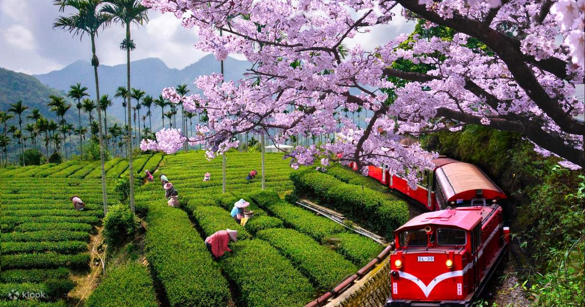
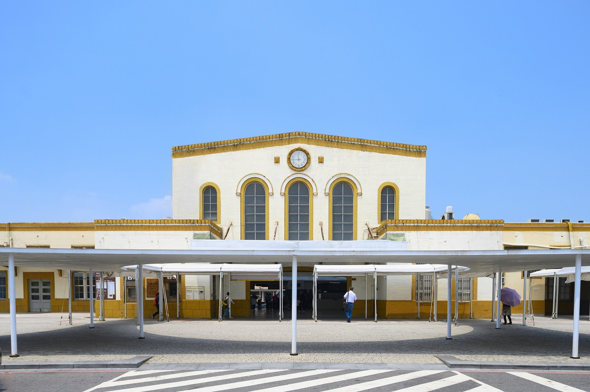
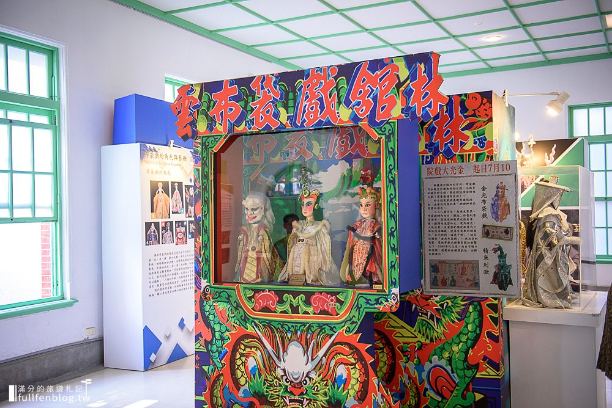

探索嘉義
以阿里山聞名，是欣賞櫻花和日出的絕佳地點，充滿自然美景和鄉村氣息。以下是嘉義著名的景點:

阿里山
阿里山森林遊樂區海拔高度2,216公尺，四周高山環列，氣候涼爽，以日出、雲海、晚霞、森林、登山森林鐵路並列為阿里山五奇，聞名國際。 而鄒族原住民人文資源更增其觀光魅力。 阿里山地區橫跨臺灣森林垂直分佈之熱、暖、溫三帶，蘊藏豐富的森林資源，尤以檜木名聞國際，漫步林間隨處可見。

嘉義火車站
「嘉義車站」位於嘉義市西區番社里。 台鐵路管理局縱貫線南段、林務局阿里山森林鐵路車站及往高鐵嘉義站的嘉義BRT車站三處交會點，為台灣第一座三鐵共構的車站。 火車站初建於西元1896年，初創為木造建築，西元1933年改建為現今的樣貌，相當具有歷史地位與價值的火車站。

布袋戲館
戲裡乾坤，彈指話說千古事，前身質樸雅致的虎尾郡役所，於2001年正式公告為古蹟，並化身在地文化氣息濃厚的布袋戲館。館內詳盡介紹布袋戲各派別、角色、文化故事和歷史沿革，來自各國的經典戲偶角色；蘊藏著古早記憶的皮影戲偶及金碧輝煌的戲臺，以及備受好評的互動式表演，皆適合與長輩同遊，感受布袋戲演藝的時光隧道！
嘉義夜市
位在嘉義市東區的文化路夜市，是嘉義市著名景點之一，屬於商圈型的夜市，範圍大約以民權路中央廣場以南、垂楊路文化公園以北的文化路，長達約500公尺的路段。 由於文化路夜市包含各類型店家及攤商，接力營業讓此地成為全年無休、24小時不停歇的熱鬧街區。